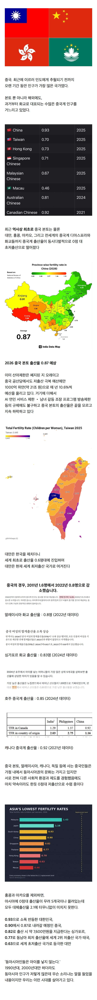

 '역사상 최초' 찍었다는 중국 출산율 : 중국계 (중국 + 대만 + 화교 + 해외 거주 중국인) 전체 출산율 0점대, 본토가 아닌 선진국에서 태어난 중국계들도 모두 0점대 출산율
댓글
수집 당시 댓글 27개
나스타샤 · 13 시간 전
ㅇㅇ
Namelo · 13 시간 전
싱크로니티인가 그거냐?
정상화의신 · 12 시간 전
Mongrip · 13 시간 전
우리나라도 남녀혐오조장 이혼조장 금쪽이류 프로그램 금지시켜야된다. 저출산 문제 몇년동안 지랄하능대 그런거 버젓이 놔두는게 이해가 안가더라. 저출산문제 얘기하다 유튭쇼츠 켜면 오은영에서 괴물같은애들 존나 나오고 서로 죽일듯이 가정파탄난 부부 존나나오고 어휴
쓱간디 · 12 시간 전
오히려 점점더 심해지는것같음
Mongrip · 11 시간 전
이런건 좀 호ㅓ끈하개 해줘야 하는 부분인데 어휴
Namelo · 10 시간 전
그런거하면 공산당이냐고 자유를 없엔다고 뭐라고 하잖슴ㅋㅋㅋㅋ
Mongrip · 10 시간 전
흡연 장면은 국민건강에 해롭다고 잘도 짜르더만 ㅋㅋㅋ 담배보다 마약보다 사회에 더 해로운게 출산혐오 결혼혐오 방송임.
닉네임변경323 · 8 시간 전
좆돌 씹혼산 폐지 기원 제발
황금올리브삼겹살 · 12 시간 전
ㅋㅋㅋ 국밥이 5000원에서 10000원 갈 동안... 월급은 200만원하던게 400만원 되진,,.. ㅠㅠ
OMOTO · 12 시간 전
ㄹㅇ
NoSugar · 12 시간 전
세계화 경제 수축 시대에서 똑똑한 순서대로 빨리 빠지는것임. 집단지성으로 다이어트 하는거지.
qtemfkd · 11 시간 전
저 미개한 새끼들이 각성한건가?
부엉맨 · 11 시간 전
마카오는 와저래 ㄷㄷㄷ
Mongrip · 10 시간 전
홍콩이랑 비슷하지뭐 세계1위수준 집값.
타니구치아사카 · 11 시간 전
대 황 민 국
타락파워쪼다 · 11 시간 전
근데 동아시아만 집중적으로 이런 이유가 뭐임...?
Mongrip · 10 시간 전
집단사회. 집단안에서 타인의 눈치를 많이봄. 집단 안에서 자기의 위치를 끊임없이 확인하려고 함. 이게 발전할땐 새너지로 좋은데 단점은 하락곡선일땐 또 다같이 던지니까…
뭐야가입언제풀림 · 8 시간 전
야 너두? 나두!
엔비디아에물렸다 · 10 시간 전
중국의 저 출산률도 공산당 조작이고 사실 더 낮다는 예측도 있음
DCInside · 10 시간 전
동일한건 국가경제를 위해서 개인을 쥐어짜는 구조
겜신병자 · 7 시간 전
지금까지 우리가 했던건 지옥 코스프레 였던 것인가
니소그 · 7 시간 전
중국에서 애 낳는 것 자체가 사실 말이 안 되지 않나? 최소 95%는 애 낳을 이유가 없잖아... 인구가 워낙 많아서 힘들고 더럽고 어려운 일을 헐값 주고 쓰다가 버리는 인력1이 될 뿐인데
글쓴이와이프 · 7 시간 전
와 중국 장쑤성이랑 헤이룽장 뭐임?? 각자 0 이랑 0.26?? 핵맞음?
김OT · 6 시간 전
생활 수준이 올라가면서 애를 낳아서 발생하는 비용을 본인들한테 투자하니까
몸이무거워지는시간 · 5 시간 전
중국 양극화 다큐 보니까 그럴만한거같음 우리나라 양극화도 심하지만 진짜 중국에 비하면 애교수준인거같음
Avekgiks · 2 시간 전
사람을 위한 사회가 아니니